CV Joints, Boots & Parts
1978-1983 CV Joint Boot Kit 550K OEM 4205853 Dodge Omni Plymouth Horizon NOS
550K
Fits 1978-1983 Dodge Omni · 1978-1983 Plymouth Horizon (52 listed)
$17.99
View details68 parts in Transmission & Drivetrain from Moog, AC and National and more, each with photos, part numbers and condition on its own page. Open a part to see every vehicle it is listed for.
68 parts
Online checkout through Square. Ships from Carbondale, PA, or pick up by confirmed appointment only. Fitment question? Message us.
550K
Fits 1978-1983 Dodge Omni · 1978-1983 Plymouth Horizon (52 listed)
$17.99
View details
X9431
Fits 1978-1983 Dodge Omni · 1978-1983 Plymouth Horizon (52 listed)
$25.99
View details
9451
Fits 1980-1985 Buick Skylark · 1980-1983 Chevrolet Citation (228 listed)
$25.99
View details
CV5405
Fits 1985-1994 Chevrolet S10 Blazer · 1985-1996 GMC Jimmy (536 listed)
$17.99
View details
CV5439
Fits 1985-1999 Buick Century · 1985-1990 Buick Electra (456 listed)
$21.99
View details
2482
Fits 1988-1997 Oldsmobile Cutlass Supreme · 1990-1992 Oldsmobile Toronado (106 listed)
$25.99
View details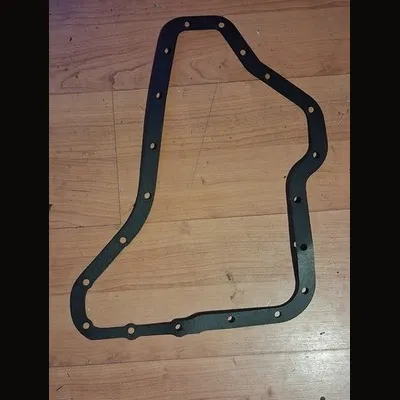
GM 8676250
Fits 1991-1999 GM
$23.99
View details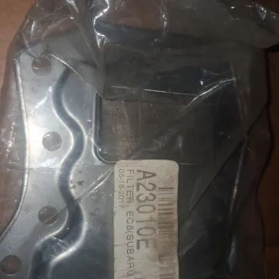
31728AA050
Fits 2003-2006 Subaru Baja · 1999-2004 Subaru Forester (82 listed)
$14.99
View details
TF-185
Fits 1969-1977 Ford Bronco · 1978-1981 Ford Fairmont (823 listed)
$49.99
View details
TF-205
Fits 1979-1987 Buick · 1979-1987 Cadillac (4 listed)
$24.99
View details
TF-206
Fits Toyota
$24.99
View details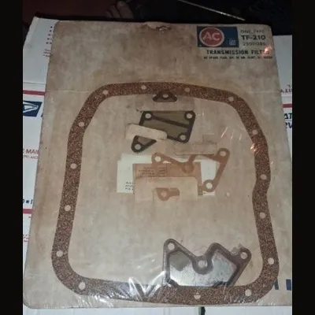
TF-210
Interchange FT1052
$24.99
View details
TF-218
Fits 1982-1983 Ford F-100 · 1984-1986 Ford F-150 (529 listed)
$29.99
View details
TF-233
Interchange FT1048
$19.99
View details
103-2250
Fits 1992-2000 Volkswagen Golf · 1995-2002 Volkswagen Cabrio (176 listed)
$24.99
View details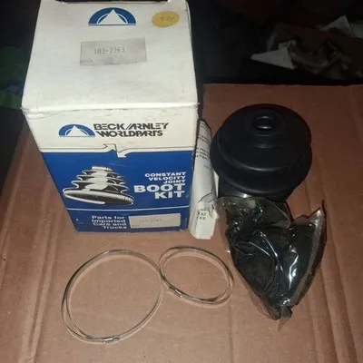
103-2263
Fits 1979-1982 Datsun 310 · 1976-1983 Honda Accord (4 listed)
$26.99
View details
103-2285
Fits 1983-1987 Renault Alliance · 1984-1986 Renault Encore (140 listed)
$19.99
View details
103-2461
Fits 1986-1990 Acura Legend (29 listed)
$25.99
View details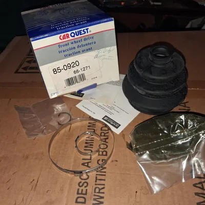
85-0920
Interchange 66-1271
$14.99
View details
331228H
Fits 1984-2007 Dodge Caravan · 1987-2010 Dodge Dakota (1255 listed)
$14.99
View details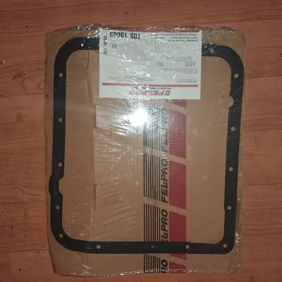
TOS 18663
Fits 1987-1993 Chevrolet Suburban · 1992-1994 GMC Yukon (17 listed)
$18.99
View details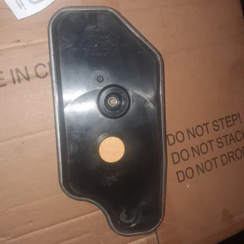
XL2Z7A098DA
Fits 1999-2001 Ford Explorer · 1999-2011 Ford Ranger (430 listed)
$27.99
View details
41437A
Fits F4A51 1996-2004
$12.99
View details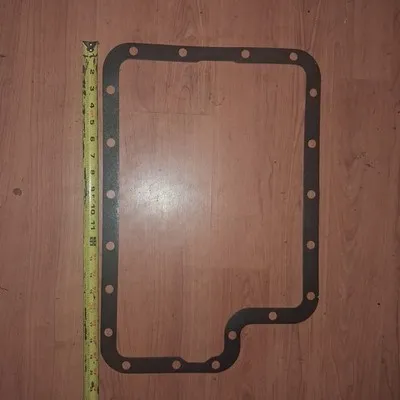
E9TZ-7A191A
Fits Ford
$19.99
View details
FT1020
Fits GM
$16.99
View details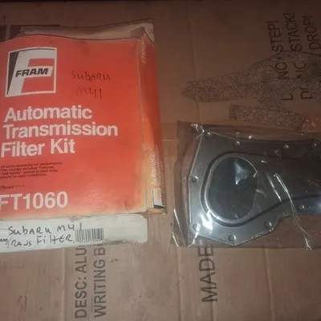
FT1060
Fits 1975 Subaru
$14.99
View details
Fits 1999-2000 Cadillac Escalade · 1993-1999 Chevrolet C1500 (1547 listed)
$22.99
View details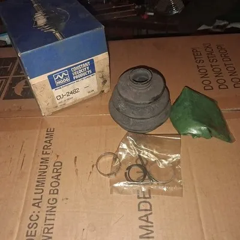
CV-2482
Interchange CV2482
$24.99
View details
CV2457
Fits 1979-1985 Buick Riviera · 1979-1985 Cadillac Eldorado (173 listed)
$29.99
View details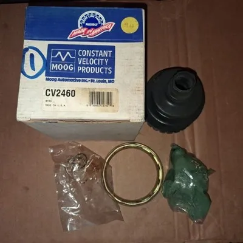
CV2460
Fits 1982-1984 Chevrolet Cavalier · 1982-1984 Chevrolet Celebrity (50 listed)
$19.99
View details
CV2460SB
Fits 1984-1986 Chevrolet Celebrity
$24.99
View details
CV2470
Fits 1974-1981 Volkswagen Dasher · 1987-1993 Volkswagen Fox (405 listed)
$19.99
View details
CV4405
Fits 1986-1996 Acura Integra · 1986-1989 Honda Accord (98 listed)
$19.99
View details
CV5443
Fits 1985 Buick Riviera · 1985 Cadillac Eldorado (14 listed)
$31.99
View details
CV5450
Fits 1985-1990 Chevrolet Celebrity · 1985-2002 Chevrolet Cavalier (244 listed)
$24.99
View details
CV5463
Fits 1985-2005 Buick Century · 2005-2007 Buick Allure (2793 listed)
$24.99
View details
CV5865
Fits 1985-1988 Chevrolet Spectrum · 1989 Geo Spectrum (54 listed)
$29.99
View details
CV6450
Fits 1983-1987 Renault Alliance · 1984-1986 Renault Encore (134 listed)
$19.99
View details
CV7400
Fits 1991-1994 Dodge Caravan (57 listed)
$21.99
View details
CV7406
Fits 1987-1995 Dodge Caravan · 1987-1995 Plymouth Voyager (601 listed)
$17.99
View details
CV7451
Fits 1993-1994 Ford Taurus · 1993-1994 Ford Tempo (60 listed)
$24.99
View details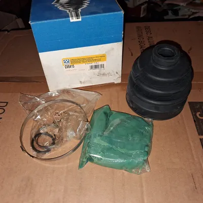
CV8415
Fits 1989-1992 Ford Probe · 1988-1992 Mazda 626 (41 listed)
$19.99
View details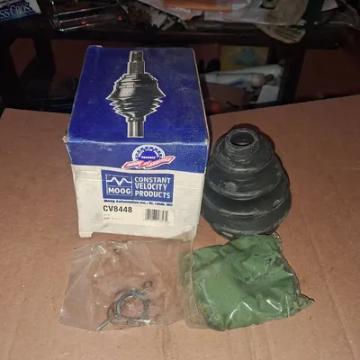
CV8448
Fits 1986-1994 Ford Taurus · 1986-1994 Mercury Sable (278 listed)
$22.99
View details
03602
Fits 1982-1984 Chevrolet Cavalier · 1982-1984 Chevrolet Celebrity
$33.99
View details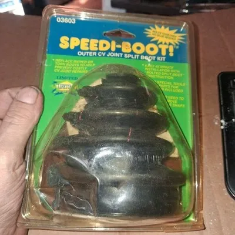
03603
Interchange Speedi-Boot 03603
$33.99
View details
03611
Fits 1979-1981 Datsun 310 · 1976-1978 Datsun F10 (44 listed)
$29.99
View details
223535
Fits 1989-1991 Chevrolet Sprint · 2003-2009 Chrysler PT Cruiser (210 listed)
$19.99
View details
3459
Fits 1984-2007 Dodge Caravan · 2007-2009 Chrysler Aspen (535 listed)
$13.99
View details
3622
Fits 2000-2008 Ford Taurus · 1986-1997 Ford Aerostar (1071 listed)
$17.99
View details
473468
Fits 1980 Plymouth PB100 · 1980 Plymouth PB200 (1542 listed)
$16.99
View details
473677
Fits 1985-1992 BMW 735i (45 listed)
$12.99
View details
66-1191
Fits 1988-1991 Honda CRX · 1988-1997 Honda Civic (401 listed)
$29.99
View details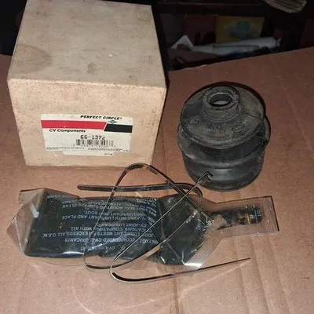
66-1372
Interchange Dana 66-1372
$31.99
View details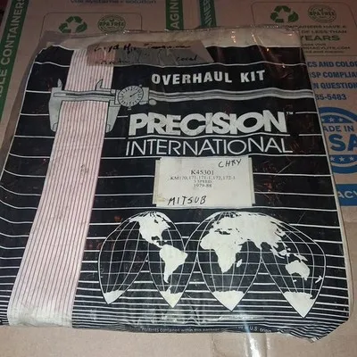
K45301
$119.99
View details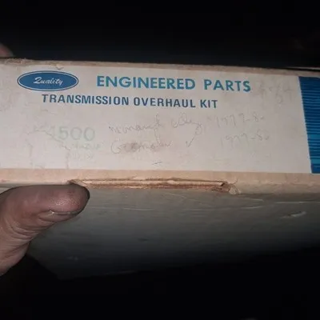
K4500
Fits Mazda
$99.99
View details
270-2378
Fits 1966-1972 Buick Skylark · 1973-1974 Buick Apollo (495 listed)
$24.99
View details
FK3722
Fits 1986-1988 Ford Aerostar · 1986-1988 Ford Bronco II (180 listed)
$19.99
View details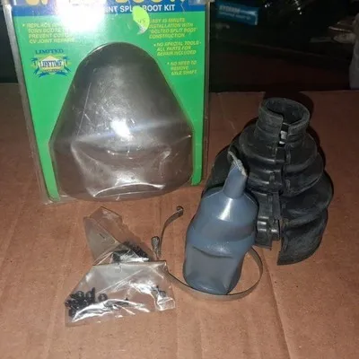
03600
Fits 1980 Audi 4000 (4 listed)
$22.99
View details
03612
Fits 1982-1985 Nissan Sentra (47 listed)
$23.99
View details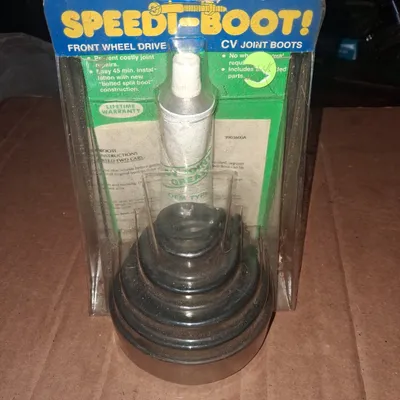
03615
Fits 1980 Audi 4000 · 1980-1985 Volkswagen Jetta (145 listed)
$23.99
View details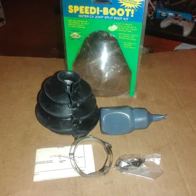
Motormite 03605
Fits 1978-1986 Plymouth Horizon · 1983-1986 Plymouth Reliant (175 listed)
$36.99
View details
Motormite 03608
Fits 1980-1984 AMC Eagle · 1980-1983 AMC Spirit (203 listed)
$29.99
View details
TM-36
Fits 1975-1976 Ford Bronco · 1975-1976 Ford Custom 500 (20 listed)
$66.99
View details
8204
Fits 1995-1999 Ford Taurus · 1995-1999 Mercury Sable (104 listed)
$64.99
View details
22335
Fits 1985-1993 Buick Century · 1985-1995 Buick Skylark (1028 listed)
$24.99
View details
4A82F
Fits 1973-1977 Ford Bronco · 1964-1970 Ford Fairlane (1881 listed)
$79.99
View details
9017F
Fits 1968 Ford
$44.99
View details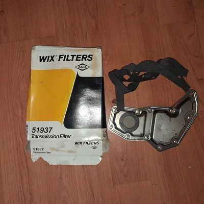
51937
Fits 1973-1996 Ford Bronco · 1976-1992 Ford F-150 (2424 listed)
$19.99
View details